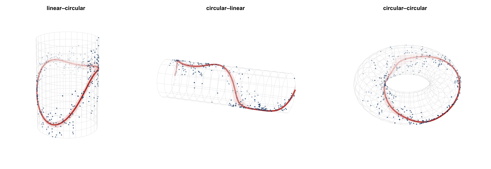

circlss adds circular families that can be run with mgcv’s gam, enabling Circular Generalized Additive Models for Location, Scale and Shape.

| type | response | covariate | geometry |
|---|---|---|---|
| l~c | linear | circular (bs = "cc") |
cylinder (“can”) |
| c~l | circular | linear | cylinder |
| c~c | circular | circular (bs = "cc") |
torus |
Install
remotes::install_github("circstat/circlss") (circlss is not yet on CRAN. You can install it with remotes from Github for now. Requires mgcv >= 1.9.4.)
Usage
circlss currently offers 12 circular families that can be plugged in to mgcv::gam directly for c~l and c~c regression.
library(mgcv);library(circular);library(circlss)
data(fisherB20c)
d <- data.frame(theta = as.numeric(fisherB20c$theta) * pi/180, x = fisherB20c$x)
b1 <- gam(list(theta ~ s(x), ~ s(x, bs="ts")),
family = vmlss(), method = "REML", data = d)
plot(b1)
predict(b1, type = "response")Those 12 families are:
- von Mises
vmlss() - projected normal
pnlss() - wrapped Cauchy
wclss() - wrapped normal
wnlss() - cardioid
cardlss() - Cartwright
cartlss() - Jones–Pewsey
jplss() - sine-skewed Jones–Pewsey
ssjplss() - Kato–Jones
kjlss() - flat-topped von Mises
vmftlss() - inverse Batschelet
ibslss() - asymmetric Jones–Pewsey
ajplss()
For c~c regression, one needs to be careful about the knots position, as mgcv defaults to the range of the input data, but we normally want the whole range ([0, 2*pi) or (-pi, pi], according to our data):
library(mgcv);library(circular);library(circlss)
data(wind)
w <- as.numeric(wind) # 310 daily directions, radians on [0, 2pi)
n <- length(w)
d <- data.frame(theta = w[-1], prev = w[-n])
b <- gam(list(theta ~ s(prev, bs="cc"), ~ s(prev, bs="cc")),
family = vmlss(), method = "REML", data = d,
knots = list(prev = c(0, 2 * pi)))circlss offers circ_gam() as a thin wrapper over mgcv::gam, and supplies some sensible defaults: the cyclic-smooth period knots spanning ([0, 2*pi) or (-pi, pi], infered from data) by default, a trailing ~ 1 fill (so you can model fewer parameters than the family has), method = "REML", named response-scale output, and a geometry-aware print / plot, and forwards everything else straight to mgcv::gam().